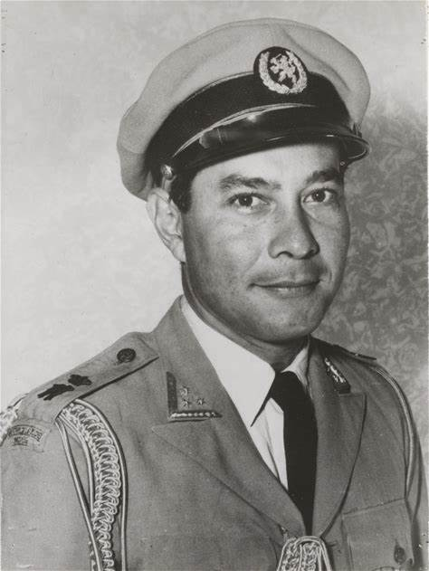

 Syarif Abdul Hamid Alkadrie
Syarif Abdul Hamid al-Qadri, lahir pada tanggal 12 Juli 1913 di Pontianak dari pasangan Syarif Muhammad al-Qadri dan Syecha Jamilah Syarwani.[2] Ia merupakan anak sulung keenam mereka.[3] Sampai usia 12 tahun, Hamid dibesarkan oleh ibu angkat asal Skotlandia Salome Catherine Fox dan rekan ekspatriatnya asal Inggris Edith Maud Curteis.[4] Salome Fox adalah adik dari kepala sebuah firma perdagangan Inggris yang berbasis di Singapura. Di bawah asuhan mereka, Hamid menjadi fasih berbahasa Inggris. Pada tahun 1933, Salome Fox meninggal namun Hamid masih tetap berhubungan dengan rekannya Curteis.[4]
Syarif Abdul Hamid menempuh pendidikan ELS di Sukabumi, Pontianak, Yogyakarta, dan Bandung. HBS di Bandung satu tahun, THS Bandung tidak tamat, kemudian KMA di Breda, Belanda hingga tamat dan meraih pangkat letnan pada kesatuan tentara Hindia Belanda. Setelah lulus pada tahun 1937, ia dilantik sebagai perwira KNIL dengan pangkat Letnan Dua. Dalam karier militernya, ia pernah bertugas di Malang, Bandung, Balikpapan, dan beberapa tempat lain di Pulau Jawa.[2][5]
Masa Pendudukan Jepang
Ketika Jepang mengalahkan Belanda dan sekutunya, pada 10 Maret 1942, ia tertawan dan dibebaskan ketika Jepang menyerah kepada Sekutu dan mendapat kenaikan pangkat menjadi kolonel. Pangkat itu bisa dikatakan sebagai pangkat tertinggi yang saat itu diberikan kepada putera Indonesia. Ketika ayahnya mangkat akibat agresi Jepang, pada 29 Oktober 1945 dia diangkat menjadi sultan Pontianak menggantikan ayahnya dengan gelar Sultan Hamid II. Jelas pengangkatannya ini adalah kemauan sebagian besar rakyat Kalbar yang tak ingin adanya kekosongan jabatan dalam pemerintahan kesultanan.[6]
Sebagai anggota BFO, Sultan Hamid II adalah pendukung konsep Federalisme dan penentang konsep Negara Kesatuan Republik Indonesia yang diperjuangkan Presiden Sukarno.[7] [8][9]
Dalam perjuangan federalisme, Sultan Hamid II memperoleh jabatan penting sebagai wakil daerah istimewa Kalimantan Barat dan selalu turut dalam perundingan-perundingan Malino, Denpasar, BFO, BFC, IJC dan Konferensi Meja Bundar di Indonesia dan Belanda.
KMB merupakan momen penting dalam sejarah Indonesia. Dalam perundingan itu, tanggal 27 Desember 1949, kedaulatan Indonesia sebagai sebuah negara diakui oleh masyarakat internasional. Perundingan KMB dilakukan oleh tiga pihak, yaitu Belanda, dipimpin oleh J.H. Van Maarseveen; BFO (Bijeenkomst Voor Federaal Overleg) dipimpin oleh Sultan Hamid II; dan Indonesia dipimpin oleh Perdana Menteri Moh. Hatta.[10]
Sultan Hamid II kemudian memperoleh jabatan Ajudant in Buitenfgewone Dienst bij HN Koningin der Nederlanden ("Ajudan dalam Pelayanan Luar Biasa kepada Paduka Ratu Belanda"), yakni sebuah pangkat tertinggi sebagai asisten ratu Kerajaan Belanda. Sebagai seorang kolonel, Sultan Hamid II adalah orang Indonesia pertama yang memperoleh posisi milter penting dalam tentara penjajahan.
Keterlibatan dengan Raymond Westerling
Pada 26 Januari 1950, elemen dari KNIL terlibat dalam pemberontakan di Jakarta dan Bandung yang direncanakan oleh Raymond Westerling dan Sultan Hamid II. Pemberontakan ini gagal dan hanya mempercepat kehancuran dari Republik Indonesia Serikat.[11]
Karena dianggap memberontak maka pada 5 April 1950 Sultan Hamid II ditangkap. Kemudian dengan adanya permintaan dari masyarakat Kalimantan Barat untuk bergabung dengan Republik Indonesia pada 22 April 1950, maka pada 15 Agustus 1950 Daerah Istimewa Kalimantan Barat menjadi bagian dari Provinsi Kalimantan dan dua hari kemudian Republik Indonesia Serikat bubar dan digantikan oleh Negara Kesatuan Republik Indonesia.[12][13][14][15]
Menteri Negara Zonder Portofolio
Sultan Hamid II (kanan) dan Ida Anak Agung Gde Agung, raja Gianyar (tahun 1949).
Pada tanggal 17 Desember 1949, Sultan Hamid II diangkat oleh Soekarno ke Kabinet RIS tetapi tanpa adanya portofolio.[16] Kabinet ini dipimpin oleh Perdana Menteri Mohammad Hatta dan termasuk 11 anggota berhaluan Republik dan lima anggota berhaluan Federal. Pemerintahan federal ini berumur pendek karena perbedaan pendapat dan kepentingan yang bertentangan antara golongan Unitaris dan Federalis serta berkembangnya dukungan rakyat untuk adanya negara kesatuan.[17]
Perumusan Lambang Negara (Garuda Pancasila)
Saat Sultan Hamid II menjabat sebagai Menteri Negara Zonder Portofolio dan selama jabatan menteri negara itu pula dia ditugaskan Presiden Soekarno merencanakan, merancang, dan merumuskan gambar lambang negara. Tanggal 10 Januari 1950 dibentuk Panitia Teknis dengan nama Panitia Lencana Negara di bawah koordinator Menteri Negara Zonder Portofolio Sultan Hamid II dengan susunan panitia teknis Muhammad Yamin sebagai ketua, Ki Hajar Dewantoro, M. A. Pellaupessy, Mohammad Natsir, dan R.M. Ngabehi Poerbatjaraka sebagai anggota. Panitia ini bertugas menyeleksi usulan rancangan lambang negara untuk dipilih dan diajukan kepada pemerintah.
Berkas:Proposed Republik Indonesia Serikat (United States of Indonesia) COA 4.jpg
Rancangan awal Garuda Pancasila oleh Sultan Hamid II, berbentuk garuda tradisional yang bertubuh manusia.
Merujuk keterangan Bung Hatta dalam buku Bung Hatta Menjawab untuk melaksanakan Keputusan Sidang Kabinet tersebut Menteri Priyono melaksanakan sayembara. Terpilih dua rancangan lambang negara terbaik, yaitu karya Sultan Hamid II dan karya M. Yamin. Pada proses selanjutnya yang diterima pemerintah dan DPR adalah rancangan Sultan Hamid II. Karya M. Yamin ditolak karena menyertakan sinar-sinar matahari dan menampakkan pengaruh Jepang.
Setelah rancangan terpilih, dialog intensif antara Sultan Hamid II, Soekarno, dan Mohammad Hatta, terus dilakukan untuk keperluan penyempurnaan rancangan itu. Terjadi kesepakatan mereka bertiga, mengganti pita yang dicengkeram Garuda, yang semula adalah pita merah putih menjadi pita putih dengan menambahkan semboyan "Bhinneka Tunggal Ika".
Pada tanggal 8 Februari 1950, rancangan final lambang negara yang dibuat Menteri Negara RIS, Sultan Hamid II diajukan kepada Presiden Soekarno. Rancangan final lambang negara tersebut mendapat masukan dari Partai Masyumi untuk dipertimbangkan, karena adanya keberatan terhadap gambar burung garuda dengan tangan dan bahu manusia yang memegang perisai dan dianggap bersifat mitologis.[18]
Garuda Pancasila yang diresmikan 11 Februari 1950, tanpa jambul dan posisi cakar masih di belakang pita.
Sultan Hamid II kembali mengajukan rancangan gambar lambang negara yang telah disempurnakan berdasarkan aspirasi yang berkembang, sehingga tercipta bentuk rajawali yang menjadi Garuda Pancasila dan disingkat Garuda Pancasila. Presiden Soekarno kemudian menyerahkan rancangan tersebut kepada Kabinet RIS melalui Mohammad Hatta sebagai perdana menteri.
AG Pringgodigdo dalam bukunya Sekitar Pancasila terbitan Departemen Pertahanan dan Keamanan, Pusat Sejarah ABRI menyebutkan, rancangan lambang negara karya Sultan Hamid II akhirnya diresmikan pemakaiannya dalam Sidang Kabinet RIS. Ketika itu gambar bentuk kepala Rajawali Garuda Pancasila masih “gundul” dan “'tidak berjambul”' seperti bentuk sekarang ini.
Inilah karya kebangsaan anak-anak negeri yang diramu dari berbagai aspirasi dan kemudian dirancang oleh seorang anak bangsa, Sultan Hamid II Menteri Negara RIS. Presiden Soekarno kemudian memperkenalkan untuk pertama kalinya lambang negara itu kepada khalayak umum di Hotel Des Indes, Jakarta pada 15 Februari 1950.[19]
Penyempurnaan kembali lambang negara itu terus diupayakan. Kepala burung Rajawali Garuda Pancasila yang “gundul” menjadi “berjambul” dilakukan. Bentuk cakar kaki yang mencengkram pita dari semula menghadap ke belakang menjadi menghadap ke depan juga diperbaiki, atas masukan Presiden Soekarno.
Tanggal 20 Maret 1950, bentuk akhir gambar lambang negara yang telah diperbaiki mendapat disposisi Presiden Soekarno, yang kemudian memerintahkan pelukis istana, Dullah, untuk melukis kembali rancangan tersebut sesuai bentuk akhir rancangan Menteri Negara RIS Sultan Hamid II yang dipergunakan secara resmi sampai saat ini[20]
Adalah lambang yang dia buat, pada tahun 2016 telah sah diakui sebagai Benda Cagar Budaya Peringkat Nasional pada 26 Agustus 2016. Penetapan tersebut ditandatangani Menteri Pendidikan dan Kebudayaan (Mendikbud) Muhajir Effendi dengan Surat Keputusan (SK) Nomor 204 Tahun 2016.[21] Namun pada hari Senin, 24 September 2018, Ketum Yayasan Sultan Hamid II, yakni Anshari Dimyati —yang diutus Max Jusuf Alkadrie, Ketua Dewan Pembina Yayasan SH II—, yang menerima plakat/sertifikat Benda Cagar Budaya Peringkat Nasional untuk Lambang Negara karya Sultan Hamid II ini.[22] Penyerahan ini dilakukan oleh Direktur Pelestarian Cagar Budaya dan Permuseuman, Triana Wulandari, mewakili Mendikbud Muhadjir Effendy.[22][21]
Masa akhir
Untuk terakhir kalinya, Sultan Hamid II menyelesaikan penyempurnaan bentuk final gambar lambang negara, yaitu dengan menambah skala ukuran dan tata warna gambar lambang negara di mana lukisan otentiknya diserahkan kepada H. Masagung, Yayasan Idayu Jakarta pada 18 Juli 1974. Sedangkan Lambang Negara yang ada disposisi Presiden Soekarno dan foto gambar lambang negara yang diserahkan ke Presiden Soekarno pada awal Februari 1950 masih tetap disimpan oleh Istana Kadriyah, Pontianak.[23]
Dari transkrip rekaman dialog Sultan Hamid II dengan Masagung (tahun 1974) sewaktu penyerahan berkas dokumen proses perancangan lambang negara, disebutkan “ide perisai Pancasila” muncul saat Sultan Hamid II sedang merancang lambang negara. Dia teringat ucapan Presiden Soekarno, bahwa hendaknya lambang negara mencerminkan pandangan hidup bangsa, dasar negara Indonesia, di mana sila-sila dari dasar negara, yaitu Pancasila divisualisasikan dalam lambang negara.[24]
Sultan Hamid II wafat pada 30 Maret 1978 di Jakarta dan dimakamkan di Pemakaman Keluarga Kesultanan Pontianak di Batulayang.[25]
Pencalonan sebagai pahlawan nasional
Pada Juli 2016, Pembina Yayasan Sultan Hamid II Max Jusuf Alkadrie dan istri mengajukan berkas Sultan Hamid II untuk dicalonkan sebagai pahlawan nasional ke Kemensos.
SUMBER:wikipedia.org
Profile Syarif Abdul Hamid Alkadrie
Nama: Syarif Abdul Hamid al-Qadri
lahir: tanggal 12 Juli 1913 di Pontianak,
.
Detail: Ia merupakan anak sulung keenam dari pasangan Syarif Muhammad al-Qadri dan Syecha Jamilah Syarwani. Sampai usia 12 tahun, Hamid dibesarkan oleh ibu angkat asal Skotlandia Salome Catherine Fox dan rekan ekspatriatnya asal Inggris Edith Maud Curteis. Salome Fox adalah adik dari kepala sebuah firma perdagangan Inggris yang berbasis di Singapura. Di bawah asuhan mereka, Hamid menjadi fasih berbahasa Inggris. Pada tahun 1933, Salome Fox meninggal namun Hamid masih tetap berhubungan dengan rekannya Curteis.
Syarif Abdul Hamid menempuh pendidikan ELS di Sukabumi, Pontianak, Yogyakarta, dan Bandung. HBS di Bandung satu tahun, THS Bandung tidak tamat, kemudian KMA di Breda, Belanda hingga tamat dan meraih pangkat letnan pada kesatuan tentara Hindia Belanda. Setelah lulus pada tahun 1937, ia dilantik sebagai perwira KNIL dengan pangkat Letnan Dua. Dalam karier militernya, ia pernah bertugas di Malang, Bandung, Balikpapan, dan beberapa tempat lain di Pulau Jawa.[2][5]